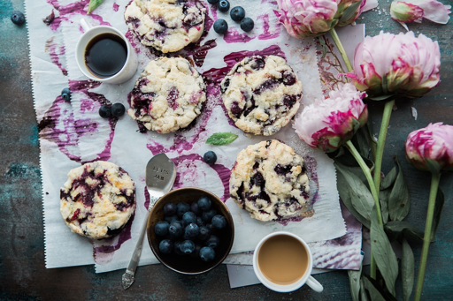
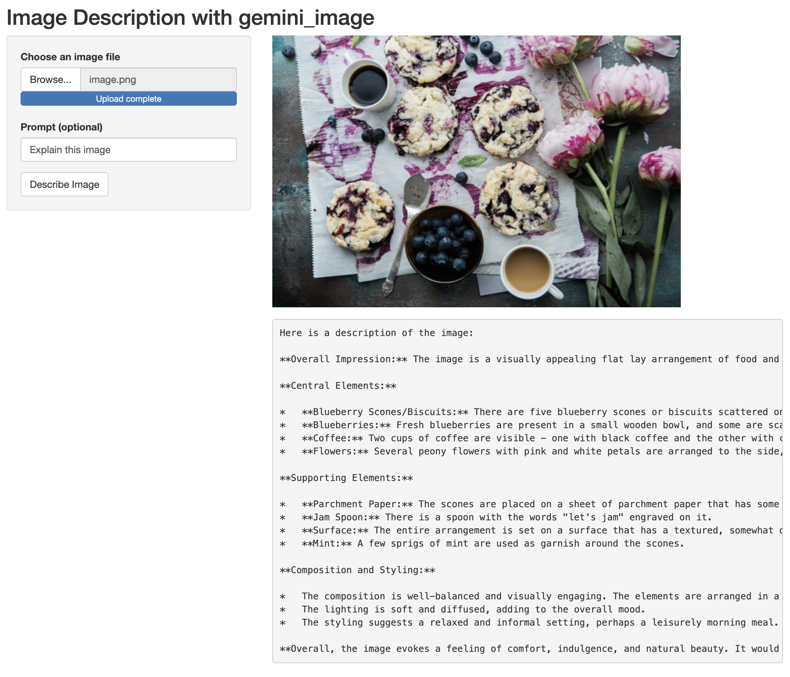

Quick start
Use image below.
Note, gemini_image will use “Explain this image” as default prompt.

library(gemini.R)
gemini_image(image = "image-understand.png")
# text
# " The image shows a table with a white tablecloth. On the table are two cups of coffee,
# a bowl of blueberries, and five scones. The scones are covered in blueberries and have
# a crumbly texture. There are also some pink flowers on the table. The background is a
# dark blue color. The image is taken from a top-down perspective."Shiny application
Use fileInput function to read image file from user.
library(shiny)
ui <- fluidPage(
titlePanel("Image Understand with gemini_image"),
sidebarLayout(
sidebarPanel(
fileInput("img", "Choose an image file", accept = c('image/png', 'image/jpeg')),
textInput("prompt", "Prompt (optional)", value = "Explain this image"),
actionButton("ab", "Describe Image")
),
mainPanel(
imageOutput("img_display"),
verbatimTextOutput("to")
)
)
)
server <- function(input, output, session) {
output$img_display <- renderImage({
req(input$img)
list(src = input$img$datapath, contentType = input$img$type, width = "80%")
}, deleteFile = FALSE)
observeEvent(input$ab, {
req(input$img)
res <- gemini_image(image = input$img$datapath, prompt = input$prompt)
output$to <- renderText({
res
})
})
}
shinyApp(ui, server)